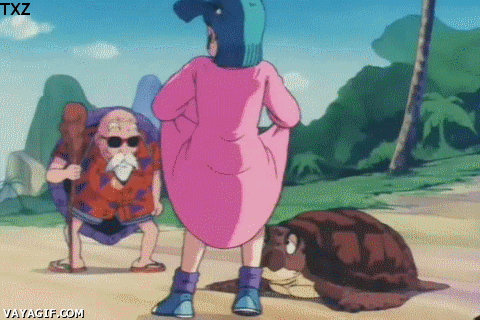
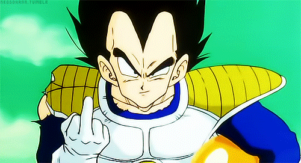
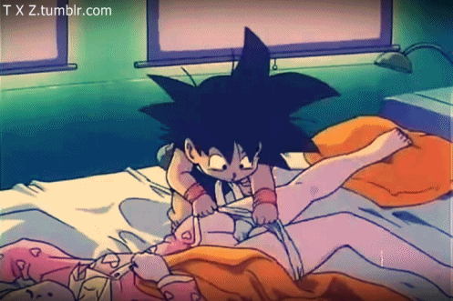

Logo no primeiro capitulo, lembra quando aquele pterodáctilo corre atrás de Bulma? Você lembra que da Bulma sai um líquido misterioso? Pois então... aquilo era xixi! No Brasil (censurado) ela fala "Goku me tire daqui!" e no original ela fala "Me mijei toda!". O outro corte foi quando Goku dorme com Bulma deitado entre as pernas dela. Como Goku nunca tinha visto uma mulher na vida, ele fez como costumava, dormir entre as pernas do avô, mas quando ele dormia com seu avô ele sentia uma certa saliência... e com Bulma ele não sentiu nada, então ele foi tirar a curiosidade... ele simplesmente levantou sua camisola e tirou sua calcinha!! Ele viu apalpou e deu um grito! (se fosse um cidadão urbano, normal... iria fazer outra coisa...). No outro dia ela (Bulma) aparece já com a Dragon Ball do velho Kame... vocês não acharam estranho? É ai que está o negocio... no original, logo pela manhã Bulma faz uma troca indiscreta com Kame... ela mostra o que tem embaixo da camisola e ele dá sua Dragon Ball em troca, mas tem um problema pior... na noite passada que Goku tirou a calcinha dela, Bulma não havia se dado conta que estava sem calcinha e quando ela levantou a camisola o velho chegou até a desmaiar...
Censuras


